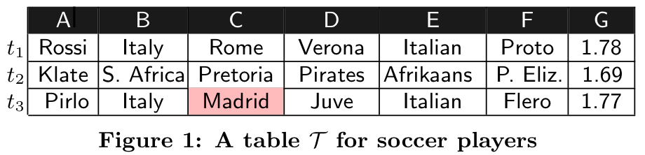
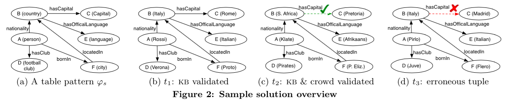

Abstract
Classical approaches to clean data have relied on using integrity constraints, statistics, or machine learning. These approaches are known to be limited in the cleaning accuracy, which can usually be improved by consulting master data and involving experts to resolve ambiguity. The advent of knowledge bases (KBs), both general-purpose and within enterprises, and crowdsourcing marketplaces are providing yet more opportunities to achieve higher accuracy at a larger scale. KATARA is the first knowledge base and crowd powered data cleaning system that, given a table, a KB, and a crowd, interprets table semantics to align it with the KB, identifies correct and incorrect data, and generates top-k possible repairs for incorrect data.
Overview
KATARA consists of three modules: pattern discovery, pattern validation, and data annotation. The pattern discovery module discovers table patterns between a table and a KB. The pattern validation module uses crowdsourcing to select one table pattern. Using the selected table pattern, the data annotation module interacts with the KB and the crowd to annotate data. It also generates possible repairs for erroneous tuples. Moreover, new facts verified by crowd will be used to enrich KBs.
Consider a table T for soccer players in Figure 1. T has no table header, thus its semantics is completely unknown. We assume that we have access to a KB K (e.g., Yago) containing information related to T. KATARA works in the following steps.

(2) Jointly validated by the KB and the crowd. Consider t2 about Klate, whose explanation is depicted in Figure 2(c). In K, Katara finds that S. Africa is a country, and Pretoria is a capital. However, the relationship from S. Africa to Pretoria is missing. A positive answer from the crowd to the question “Does S. Africa hasCapital Pretoria?” completes the missing mapping. We consider t2 correct and generate a new fact “S. Africa hasCapital Pretoria”.
(3) Erroneous tuple. For tuple t3, there is also no link from Italy to Madrid in K (Figure 2(d)). A negative answer from the crowd to the question “Does Italy hasCapital Madrid?” confirms that there is an error in t3, At this point, however, we cannot decide which value in t3 is wrong, Italy or Madrid. Katara will then extract related evidences from K, such as Italy hasCapital Rome and Spain hasCapital Madrid, and use these evidences to generate a set of possible repairs for this tuple.

Publications
KATARA: A Data Cleaning System Powered by Knowledge Bases and Crowdsourcing
ACM SIGMOD Conference on Management of Data (SIGMOD), Melbourne, Australia, 2015
Xu Chu, John Morcos, Ihab F. Ilyas, Mourad Ouzzani, Paolo Papotti, Nan Tang and Yin Ye
KATARA: Reliable Data Cleaning with Knowledge Bases and Crowdsourcing
The 41st International Conference on Very Large Data Bases (VLDB) (Demo), Kohala Coast, Hawai'i, 2015
Xu Chu, John Morcos, Ihab F. Ilyas, Mourad Ouzzani, Paolo Papotti, Nan Tang and Yin Ye